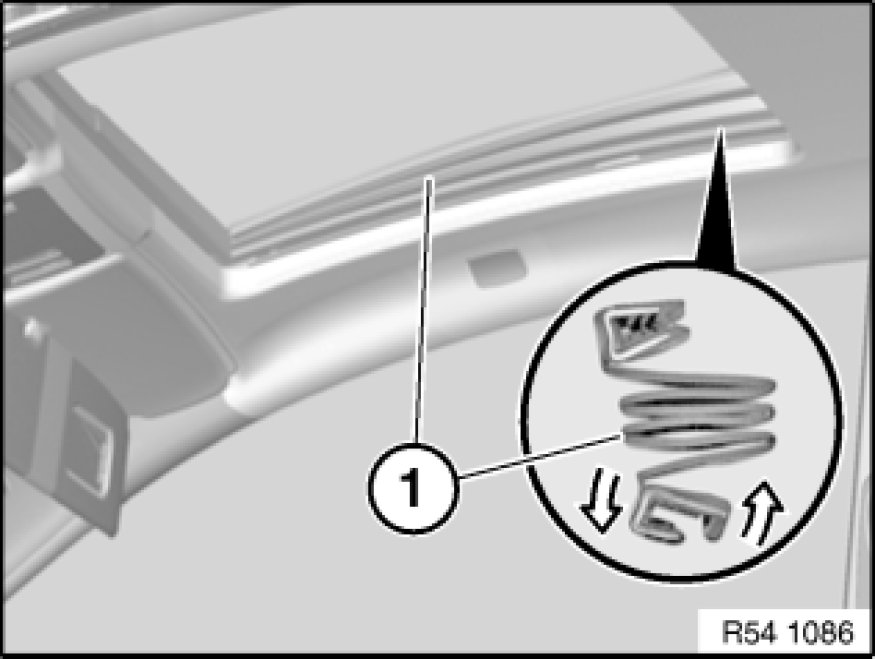

54 12 015 Replacing Left or Right Gaiter For Glass Slide/Tilt Sunroof
54 12 015 - Replacing left or right gaiter for glass slide/tilt sunroof

Important!
Handle the gaiter with extreme care throughout the work procedure.
Soft component is highly susceptible to tearing and kinking.
Grip the gaiter by its attachment strip and do not pull on the rubber (risk of damage!).

Glass slide/tilt sunroof in fan setting.
1. Carefully detach gaiter (1) at top from guide.
2. Twist gaiter (1) out of lower guide.
Installation Note:
Check that attachment strips are securely seated on guides.
If necessary, replace faulty gaiter.